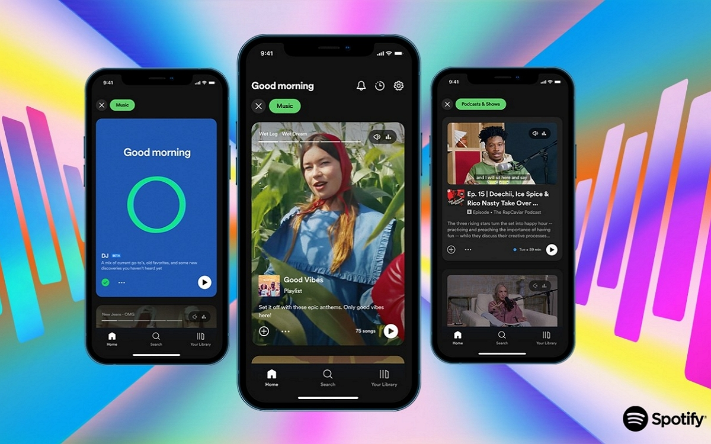

Spotify, dont la prononciation en anglais est, représente un service suédois de streaming musical qui se décline sous la forme d'un logiciel propriétaire et d'un site web. Cette plateforme de distribution numérique permet une écoute quasi instantanée de fichiers musicaux. Le catalogue peut être exploré par artiste ou par album, et il propose également une fonctionnalité de listes de lecture personnalisées.
Le service est accessible gratuitement, mais des annonces publicitaires sont diffusées entre les morceaux. La version Premium, quant à elle, offre la possibilité d'écouter les morceaux hors ligne et supprime les publicités.
L'application est compatible avec Windows, MacOS, certaines distributions Linux, iOS, Android, PlayStation 3, 4, 5, Xbox One, Xbox Series X, S, et est également accessible via la plupart des navigateurs web.
En outre, divers appareils connectés, tels que des enceintes, des télévisions, des montres intelligentes, des assistants vocaux, permettent également d'utiliser l'application.
L'équipe Spotify AB, basée à Stockholm en Suède, travaille au développement de ce logiciel depuis 2006. L'entreprise a été fondée par Daniel Ek, ancien directeur technique de Stardoll, et Martin Lorentzon, cofondateur de TradeDoubler. Le siège social de Spotify est également situé à Stockholm. Le service a été lancé pour un accès public le 7 octobre 2008 sur Windows, puis un an plus tard, en septembre 2009, dans l'App Store d'iOS et le Play Store (anciennement Android Market) d'Android.
Le 4 mars 2009, Spotify a annoncé que des données personnelles, y compris les adresses électroniques et les dates de naissance des membres du service inscrits avant le 19 décembre 2008, étaient potentiellement exposées à des risques dus à des hackers exploitant une faille dans le système.
